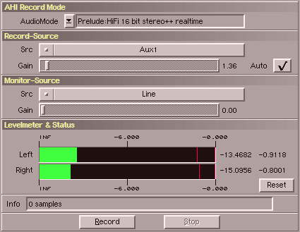

Mit SoundFX köennen Sie natürlich auch eigene Sounds von extenen
Tonquellen (z.B. Mikrophone) aufnehmen. SoundFX benutzt AHI für die Aufnahme.
Wenn sie direkt von einer CD aufnehmen wollen, probieren
sie bitte den CDDA-Loader.
Dieses Fenster bietet ihnen folgende Funktionen :
| Gadget | Beschreibung |
|---|
| AHI Record Mode | Wäehlen Sie den Audiomodus für die Aufnahme. |
| Record Source | Dies ist eine Liste der vorhandenen Aufnahmequellen. |
| Record Gain | Hiermit steuern Sie die Lautstärke der Aufnahme aus. |
| Record Auto | Dies ist eine Besonderheit von SoundFX.
Ziehen Sie den Lautstärkeregler einfach voll nach rechts und aktivieren sie 'Auto'.
Jetzt wird SoundFX die Lautstärke solange zurücknehmen,
bis keine Übersteuerungen auftreten. |
| Monitor Source | Dies ist eine Liste der Abhörausgänge. |
| Monitor Gain | Hiermit steuern Sie die Lautstärke zum Abhören. |
| Level Meter | Die Levelmeter zeigen ihnen die Lautstärke am Eingang an.
Die roten Striche markieren den Maximalwert. Die Werte
rechts neben den Levelmetern zeigen den aktuellen und
den maximalen Wert an. |
| Status | Zeigt an, wieviel bereits aufgenommen wurde. |
| Reset | Dient zum Zurücksetzen der Maximalwertanzeige. |
Ein Klick auf "Record" startet die Aufnahme. Die läufende Länge wird im Infofeld
angezeigt. "Stop" hält die Aufnahme wieder an. Wenn SoundFX aufnimmt, sind die Levelmeter inaktiv um
Rechenleistung zu sparen.
Bitte beachten sie, das AHI derzeit immer im Stereo 16 bit Format aufnimmt. Zukünftige
Versionen unterstützen möglicherweise auch Mono Aufnahmen. Für SoundFX gibt es keine derzeit keine einfache
Möglichkeit das Problem zu umgehen. Sie können jedoch den Convert-Channels Operator nach der Aufnahme
einsetzen.
Ein anderes Problem ist, das sie möglicherweise die Gain-Regler nicht nutzen können. Das kann daran liegen,
das die Aufnahmehardware und/oder der AHI Treiber dies nicht unterstützen.
|